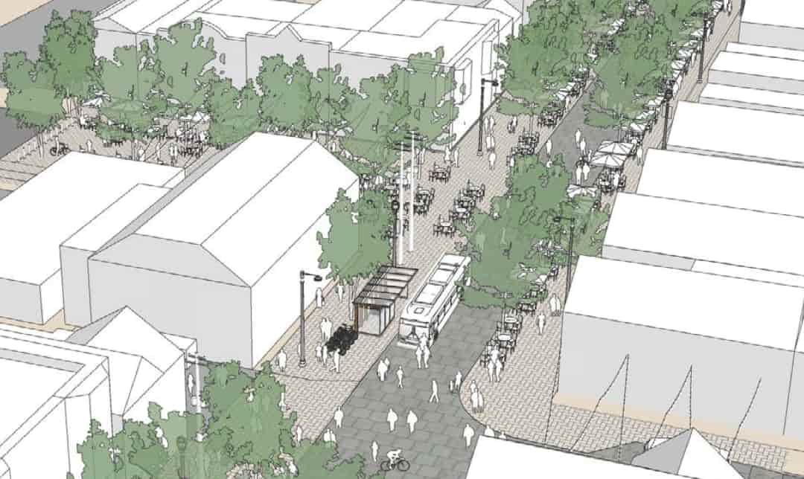

Brady Street is not only a major business center in Milwaukee, it is the core of a lively and historic neighborhood. Residents and visitors alike deserve a safe, inclusive, and comfortable place to shop, dine, and enjoy life. Brady Street has struggled with dangerous driving for decades. Reckless driving on Brady has caused countless injuries and several deaths. It also makes the street less comfortable and prevents businesses and residents alike from fully enjoying their neighborhood. By focusing on safety and neighborhood access over car throughput and speed, we can create a more inclusive environment with greater independence and freedom for everyone, especially kids and our most vulnerable neighbors.
The Brady Street Business Improvement District (BID), City of Milwaukee, The Kubala Washatko Architects (TKWA) and GRAEF are studying options to refocus Brady Street's design to better serve neighbors and businesses in the area rather than acting primarily as a through street for people driving to other areas of the city. The initial report includes four options, two of which consider closing part of Brady Street to private vehicles and maintaining access for buses and deliveries. The project has a few key goals:
There are several ways to get involved and make your voice heard.
Jonathan.Brostoff@milwaukee.gov and mayor@milwaukee.govWhile Brady Street does support business traffic, it also frequently acts as a through-street for trips that create congestion and don’t add value to the community. Most cut-through trips are better served by Ogden Avenue or North Avenue, which both have sufficient capacity to accommodate current Brady Street traffic.
The City of Milwaukee's Neighborhood Traffic Management Program also offers subsidized traffic-calming improvements on residential streets which can be installed independently of any changes to Brady Street.
Street access may be opened for delivery vehicles prior to peak business hours and any design choices will not restrict deliveries on weekends.
All bus routes will continue to operate on Brady Street. The Green Line bus, which connects Bayshore, the airport, and tons of key hubs in between, will remain open going through Brady. Reducing congestion on Brady Street will improve bus service on this important corridor.
Emergency vehicles will maintain access to Brady Street. Reducing vehicle congestion on the street makes for for more reliable emergency vehicle service.
Brady Street contains 66 metered parking stalls and 12 loading stalls between Humboldt to Farwell. Loading stall access for businesses will be maintained.
Existing off-street public parking is currently underutilized. The municipal lot at 1720 N Arlington Place has 48 parking stalls, and is conveniently connects to Arlington. Nearby street parking allows for easy handicapped access.
Design considerations will need to be taken to allow continued access to existing private surface lots.
Additionally, a new parking garage with public access is planned on Farwell near Brady Street, and drivers from the east can be guided to park there.
One that failed was Mitchell Street, which started by removing many of the businesses and destinations that made it worth visiting in the first place. With those gone, the replacement couldn't attract the people back. Brady Street is simply making the street safer for people to visit. By making it safer, it will be more appealing to new and more diverse visitors as well.
Additionally, plans are being considered to do some short-term trials and solicit feedback prior to a permanent implementation.